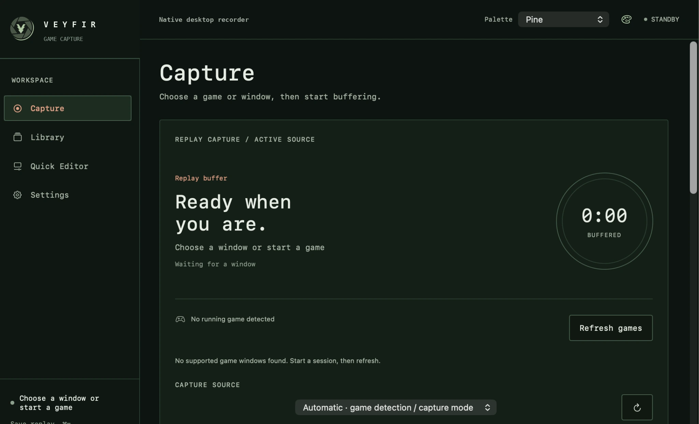

Simple game capture
Set up in seconds.
Start recording.
GAME CAPTURE, SIMPLIFIED
A fast, lightweight desktop recorder for gamers.
Save your best moments, effortlessly.

Set up in seconds.
Start recording.
Made to stay light.
Keep your FPS.
No ads. No bloat.
Just capture.
Never miss a moment.
Save it later.
Trim your highlights.
Export with ease.
Found a bug?
Tell us what happened and help make Veyfir better.